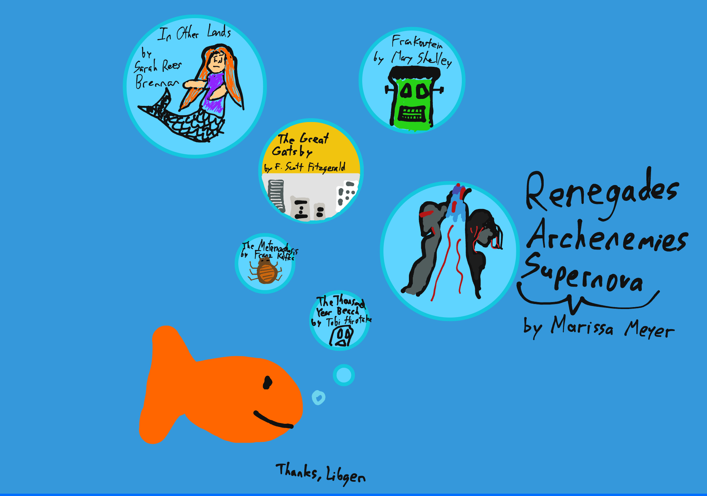

Photos
# ID Card
I hope to show different aspects of myself through the format of a typical minesweeper game -- the different mines dotted around the board each show something about me or something I enjoy. The numbers around them show how many mines are in the surrounding 8 squares, or extra details. The squares around the Music Mine show some of my favorite songs! I also made sure to make the whole piece as accurate and realistic as possible to a typical minesweeper game.
# Summer Reading Mind Map
For my summer reading mind map, I've created a fish with little bubbles! Not for any particular theme, but because I thought it would be cute, and might make you laugh. I got many of my book recommendations this summer from a mobile game called "Alter Ego". It's a bit of a mix between a personality test and an idle game, which is one of the most interesting mixes I've seen in a while. In it, the player collects "EGO" to buy different books (which give more EGO), or advance the storyline (which sometimes come with the personality tests). It's a very cute game, so I was determined to read all the books they referenced. I particularly enjoyed the imagery in The Thousand Year Beach. I also re-read the whole trilogy of Renegades, which made me cry a little! I feel satisfied with the amount I've read over the summer.
# Reading Goals Mind Map
Originally I was hoping to go with a whack-a-mole style reading goal mind map, but found it easier to just go with a tree-like mind map. I want to place a bigger focus on reading things I actually enjoy, rather than just looking at what other people enjoy.
# Consumed Media (Cindy Collab)
I collaborated with Cindy to create a collage of media that we've enjoyed! It contains a diverse list of picture books, manga, songs, nonfiction books, and even includes doodles in the bottom left and bottom right corners.
# Review of Disaster by Daniel Knox
This piece is a list of my favorite songs from Daniel Knox's album "Disaster". The songs are filled with soothing vocals, often accompanied by a solitary piano.
# Nostolgia Quickwrite
In this page, I wrote about some of my early childhood memories. I used to live in Queens, so I had many memories of the walkways outside our apartment, the grocery store, and the library.
# Brainvomit
In quickwrites #4, I struggled to find a song that had been stuck in my head for the past hour. I also included a drawing of the album cover before I found the original one. I deeply enjoyed this type of open-ended writing.
# Party In The USA Notes
In the Party in the USA notebook pager, I just took notes along with the class... I was thinking of "I Love It" by Icona Pop while listening to it.
# Oct 11th Freewrite
In this freewrite, I write about my experience with school, my goals, and my desires. I'm really excited about game development this year!
# Sep 29th Freewrite
In this freewrite I write about my previous night, turning what was meant to be a 10 minute nap into a full on deep sleep. Anxious about my creative writing assignments, I turn my day into a notebook page.
# College Apps Quickwrite
In this notebook page, I detail my college anxieties. Unsure of what to write about, I begin a bulleted list of potential topics.
# Sep 9th Freewrite

In this freewrite, I think back about religion. While my sister and I go to church, neither of us are religious. I also talked with Matthew, a friend from sleepaway camp, about being religious. Early one morning, I saw a beaver in real life.
# "Using my yearly reflection as an opacity mask"
For this creative piece, I would like to write a reflection on where I am mentally/physically/emotionally, and briefly describe recent events in my life. I would like to do these "mental check-ins" around winter time every year so that I'll be able to compare how I've changed as a person.
To make it visual, I'll use a recent photo of me with a dark background but bright center. I'll then write the reflection with [Monospace, 15pt], space the text evenly across the image, then use the text as an opacity mask. The image should only be visible through the lettering. The background color will be either black or white, whichever provides more contrast.
# Google Translate can't help me here
During the summer, I went to a sleepaway computer camp. When I tried asking a stranger for directions, there was a language barrier between us. I was able to use the Google Translate app to talk to him, and was successfully able to make my way to the train station. Though we may take it for granted today, it's amazing that a company like Google exists. In just an instant we can browse the entirety of human knowledge, work on documents in real time with people around the world, or translate words to any number of languages. And all for free! I thought it would be funny to "translate my thoughts" into words another person would understand. I'm a little embarrassed by how cheesy it is, but I like the overall idea.
# Hand Enjoyer
Over the past many months, I've learned so much about how to be close to others. I wanted to draw hands, which are often said to express emotion purely through their form. I'm extremely grateful for the time we've shared, and will cherish these memories.